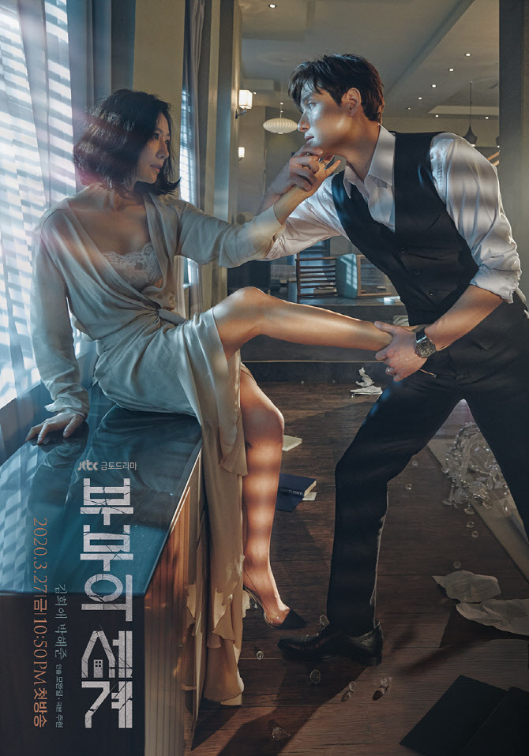
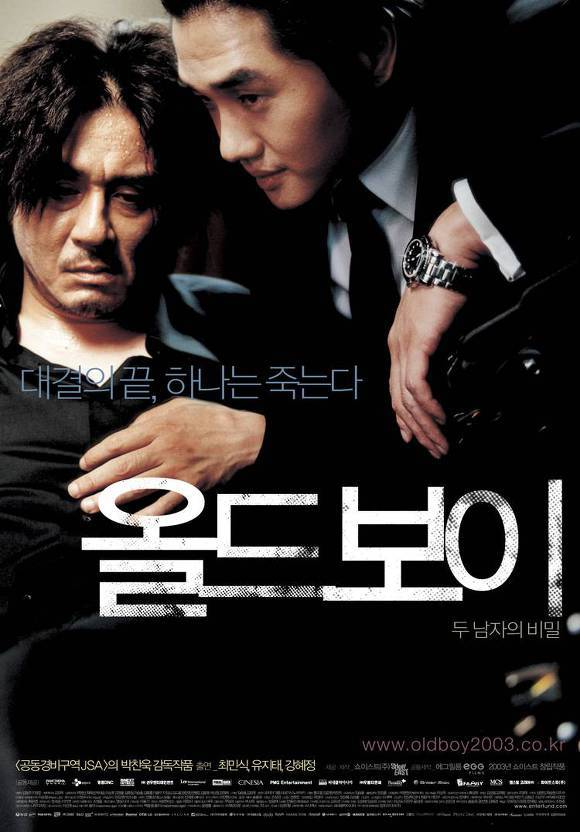
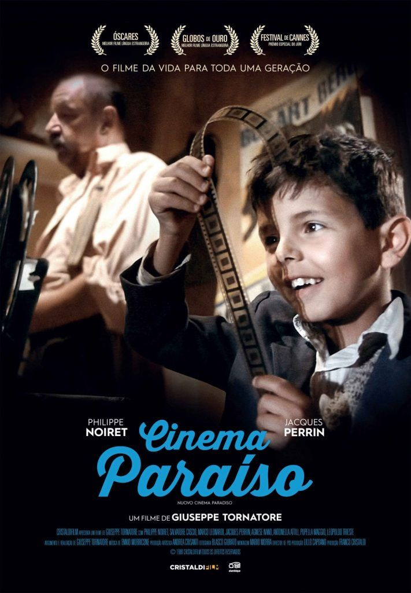

세은's Pick! 추천 작품들
 HOBBY
HOBBY
<드라마 보기>
저는 드라마 보는 것을 굉장히 좋아합니다.
개인적으로는 일주일마다 방영일을 기다리는 것보다
다 끝난 드라마를 몰아서 보는 걸 더 좋아해요.
☆추천 드라마
1. 언내추럴 (일본드라마)
사인으로 사망에 이른 사람들의 억울한 죽음 뒤에 있는 진실을 풀어나가는
법의학 수사 드라마이며 일본드라마 특유의 따뜻한 분위기가 인상적인 작품입니다.
언내추럴 대표 ost 영상입니다.
2. 부부의 세계

"사랑에 빠진 게 죄는 아니잖아!" 라는 명대사를 남긴 드라마...
(유뷰남이라면 당연히 죄 맞다.)
가정을 두고 바람을 핀다는 꽤 자극적인 주제의 드라마이기는 하지만 자극적인만큼 시간 가는 줄 모르고 봤습니다.
<영화 보기>
저는 드라마뿐만 아니라 영화도 무척 즐겨봅니다.
영화감독의 다양한 의도를 추측하며 영화 속에 숨겨진 의미를 파악하는 게 정말 즐거워요!
가장 좋아하는 감독은 박찬욱 감독입니다. 박찬욱 감독 영화 중 가장 추천하는 작품은 바로~

올드보이(OLDBOY)
엄청난 결말로 저에게 충격을 준 영화입니다.
혹시나 안 보신 분들을 위하여 스포는 하지 않겠습니다. 꼭 보세요!
♪♬ 제가 이 영화에서 가장 좋아하는
음악 입니다. ♪♬
마지막으로 외국 영화 한 편만 더 추천해드리자면~

시네마 천국
영화가 세상의 전부인 소년 토토와
낡은 마을 극장의 영사기사 알프레도의 애틋한 우정을 그린 영화입니다.
엄청 감동적인 영화니 휴지 필수!!!
제가 이 영화에서 오열했던 장면입니다.
추가적으로 제가 추천해드리고 싶은 작품들을 표로 만들어보았습니다!
<작품 및 평점>
| 구분 |
장르 |
제목 |
평점 |
| 드라마 |
막장 |
펜트하우스 |
★★★★☆ |
| 미국시트콤 |
FRIENDS |
★★★★★ |
| 영화 |
범죄, 스릴러 |
양들의 침묵 |
★★★★★ |
| 로맨스, 코미디 |
인생은 아름다워 |
★★★★★ |
| 하이틴 |
퀸카로 살아남는 법 |
★★★★★ |
이대로 끝내기엔 아쉽지 않으신가요?
저에 대한 더 속깊은 이야기를 듣고 싶으시다면
문을 클릭해주세요!